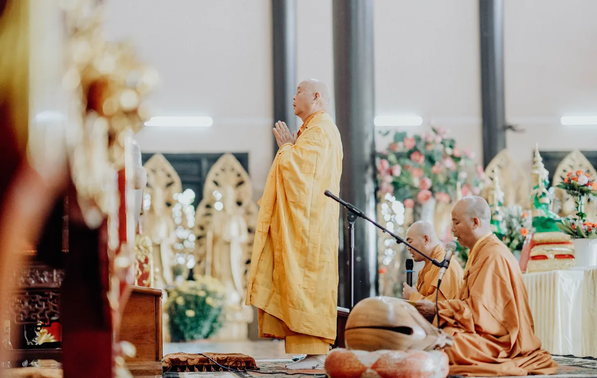
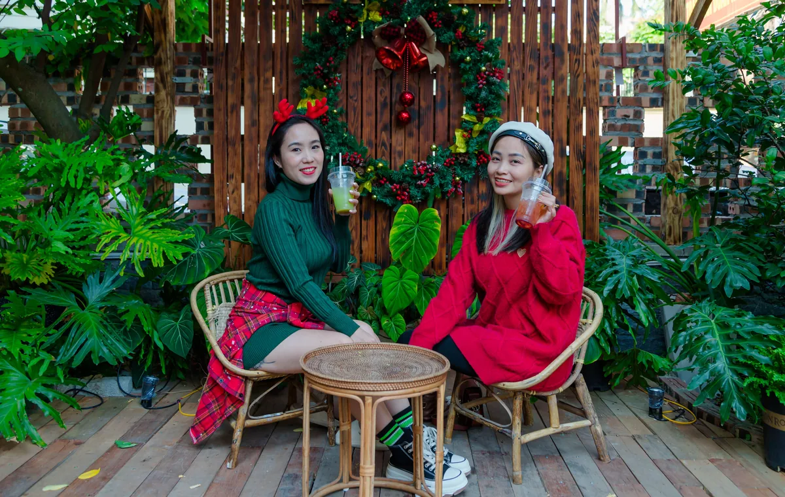
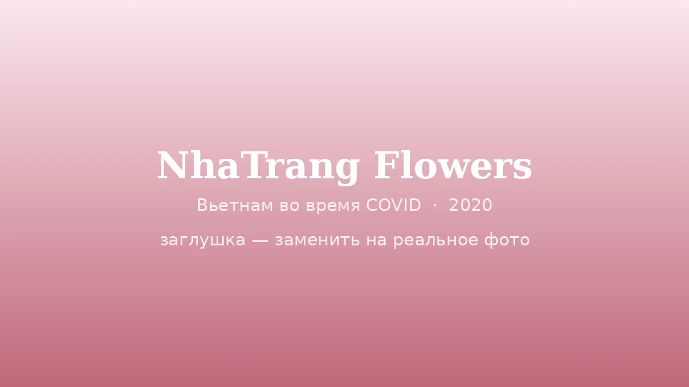
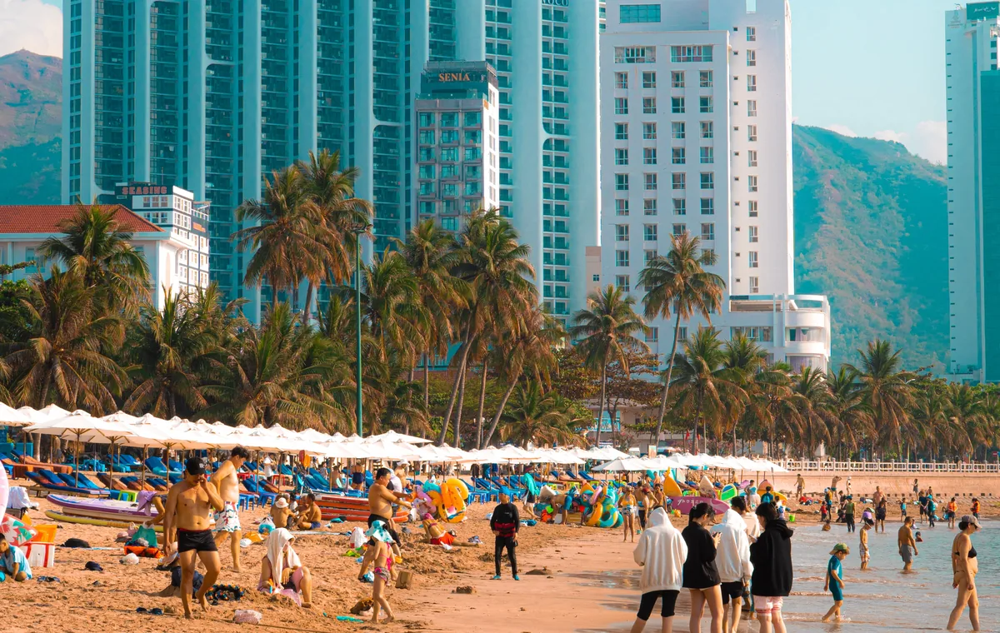
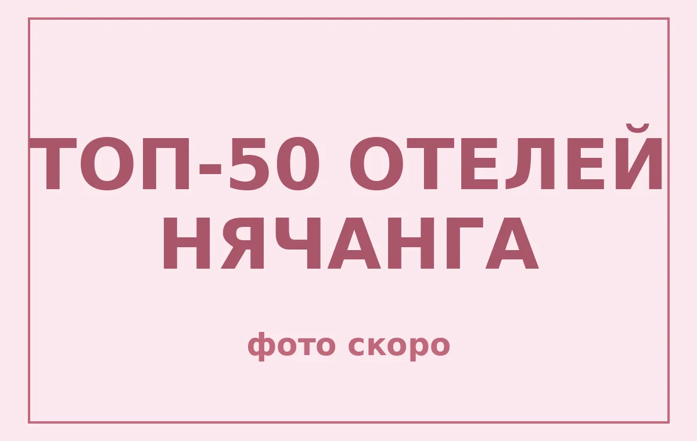
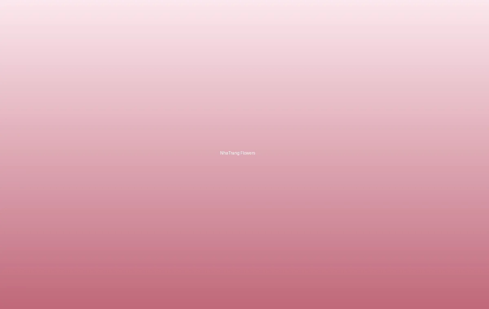
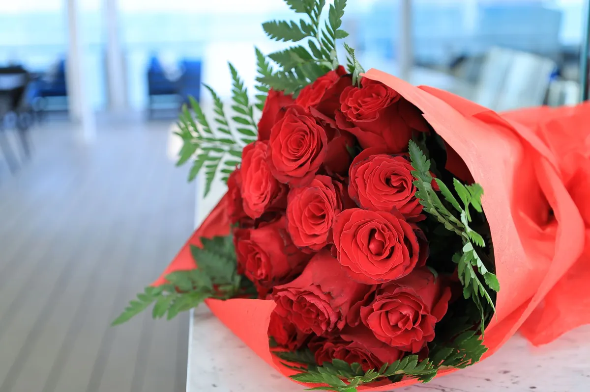
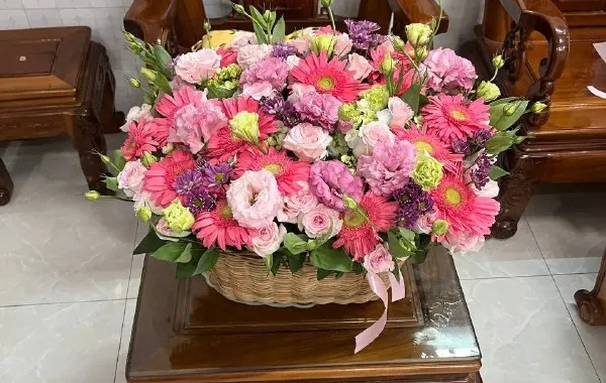

Статьи
Полезные статьи о цветах, поводах и традициях Вьетнама.
Как Вьетнам изменился за последние 15 лет
Рост экономики и доходов, туристический бум, цифровизация, метро и новый Нячанг — что изменилось с 2010 по 2025 и почему сейчас хорошее время приехать.
читать →Как устроена политическая жизнь Вьетнама
Одна партия и пять «опор» власти, Национальное собрание, реформы Дой Мой и новая карта провинций — что это значит для туриста.
читать →
Во что верят вьетнамцы: религия, традиции, ценности
Культ предков, буддизм, католики, Каодай и Хоахао, конфуцианские ценности и Тет — во что на самом деле верят вьетнамцы.
читать →
Чем живёт вьетнамская молодёжь: образ жизни 2026
Самая молодая страна региона: соцсети и TikTok, культ кофеен, стартапы, учёба за границей и традиции.
читать →Война Вьетнама и США: интересные факты и что посмотреть
«Американская война», тоннели Кучи и Виньмок, 17-я параллель, база Камрань рядом с Нячангом и какие места можно посетить сегодня.…
читать →Как Вьетнам принял эпоху ИИ-бума: гонка 2026
Вьетнам делает ставку на ИИ: дата-центры NVIDIA, AI-фабрика FPT за $200 млн, госстратегия до 2030 и прогноз Google в $79 млрд.…
читать →
Объекты ЮНЕСКО во Вьетнаме: полный список 2026 и что посмотреть
Все 9 объектов всемирного наследия: бухта Халонг, Хойан, Хюэ, Мишон, Чанган и новый Йенты. Что посмотреть и как добраться из Нячанга.…
читать →
Вьетнам во время COVID: как Нячанг пережил пандемию
Личный взгляд изнутри: закрытие границ в 2020, пустые пляжи, локдаун 2021 и возвращение туристов с 15 марта 2022 года.…
читать →
Почему Вьетнам стал популярным направлением: причины турбума 2026
Турпоток во Вьетнам бьёт рекорды: безвиз, прямые рейсы, доступные цены и море Нячанга. Разбираем, почему сюда едут из России, Кореи и Китая.…
читать →
Топ-50 отелей Нячанга, куда мы доставляем цветы
Список из 50+ отелей Нячанга и Камрани, куда возим букеты: InterContinental, Sheraton, Novotel и другие. Бесплатно по городу, день в день.…
читать →
Розы в Нячанге: значение, уход и кому дарить
Разбираем язык роз: что означают цвета и количество, кому их дарят и как сохранить букет свежим в жарком климате Нячанга…
читать →
Доставка цветов в отель InterContinental в Нячанге
Везём свежий букет прямо в InterContinental — на ресепшен или в номер. Бесплатно по Нячангу и день в день. Как оформить заказ.…
читать →
Какие цветы подарить на годовщину свадьбы в Нячанге — гид
Красные розы, пионовидные розы или корзина из 101 розы? Разбираем символику цветов и чисел и как заказать доставку в отель или на виллу.…
читать →
Какие цветы подарить на день рождения в Нячанге — гид
Розы, лилии или пионовидные розы? Разбираем, какой букет выбрать на день рождения и как заказать доставку прямо в отель.…
читать →